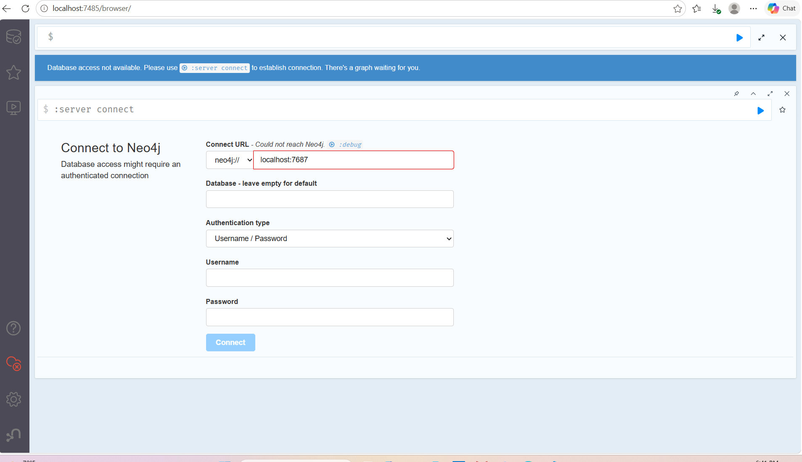
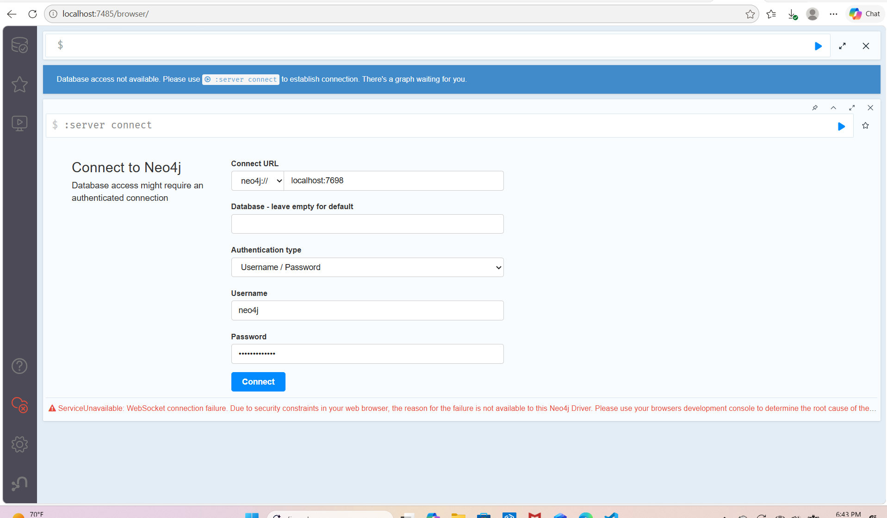
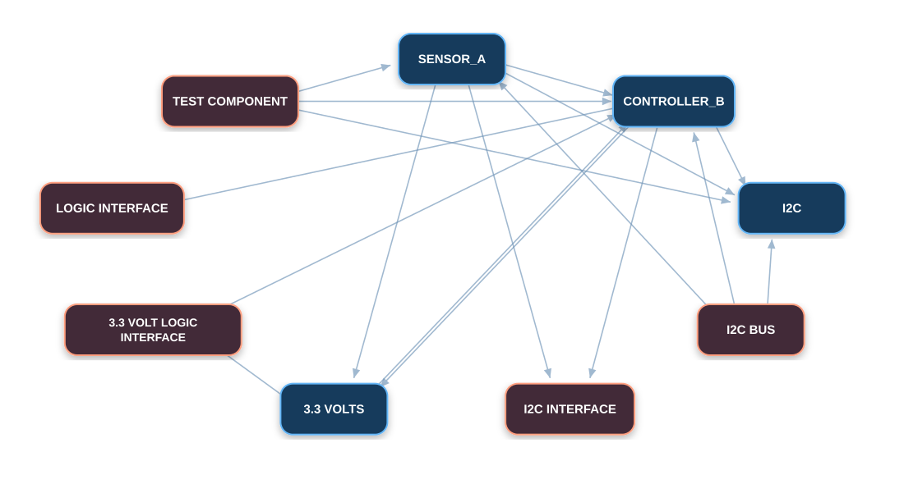

Making Our AI Agents Useful, Controlled, and Verifiable
My role is not only to run Pi. I am learning how Pi acts as the agent harness, how our agents connect to technical data, and how we give them clear rules, permissions, verification, and human review.
Pi Subject Matter Expert (SME)
Local AI + PathRAG + Neo4j validation
Rules, permissions, logs, verification, approval
I Am the Pi SME for Our Team
My job is to understand the agent harness and help the team use it in a controlled way.
Pi SME
- Understand how Pi runs an agent.
- Understand model, tool, skill, file, and instruction access.
- Help define how agents hand work to each other.
- Help the team debug and operate Pi.
Agent Reliability
- Help define agent rules and limits.
- Identify actions that need human approval.
- Support logging, monitoring, and verification.
- Make agent behavior easier to explain and review.
What Is Pi?
Pi is the coding-agent harness we are using.
It is the environment around the LLM that lets an agent receive instructions, use tools and skills, work with files, and produce results.
An Agent Needs More Than an LLM
Model
Reasoning and language.
Tools
Files, commands, APIs, search, databases.
Instructions
The job, goal, handoff, and expected output.
Rules
What the agent can and cannot do.
Harness
Pi runs the agent loop and connects these parts.
Verification
Checks that important results are correct.
My Local AI and Data Pipeline
I also fixed PathRAG configuration problems, including a duplicate PathRAG instance that was still creating the old 1536-dimension graph setup.
Neo4j Browser Reached My Server-Side Database

What This Shows
The Neo4j web interface is running from my server-side container.
I used VS Code SSH port forwarding to reach the service from my computer.
I Also Had to Debug the Bolt Connection

What I Learned
The Browser UI could load while the database connection still failed.
I traced the connection through:
The working connection became bolt://localhost:7698.
PathRAG → Neo4j Worked End to End
Test facts I gave the system
This proved the technical pipeline works: local LLM + embeddings + PathRAG + Neo4j.
What PathRAG Actually Created

The Pipeline Works, but the Ontology Needs Control
Current Extraction
Better Target
Useful Pi and System Commands
Check Pi
pi --versionConfirms which Pi version is installed.
Start Pi
piStarts the Pi coding-agent interface.
Check Local Models
ollama psShows models currently loaded by Ollama.
Start Ollama on GPU
OLLAMA_LLM_LIBRARY=cuda_v13 ollama serveStarts the local model service using the CUDA 13 library.
Check Containers
docker ps -aShows my dev and Neo4j containers.
Check GPU
docker exec mubina-dev nvidia-smiConfirms the dev container can see the NVIDIA GPU.
mubina-dev.Pi Uses My Local Qwen Model Through Ollama
Why This Matters
It lets us run the agent locally instead of depending on a remote model for every task. It also gives us a controlled place to test agent instructions, tools, and workflows.
Rules I Think We Need Around Our Agents
Give each agent only the tools, files, and services it actually needs.
The agent should know its job, expected output, and when the task is complete.
Important technical claims should point back to a source document or graph evidence.
The extractor should not be the only thing deciding whether its own result is correct.
Important requirement or design changes should wait for a person before being committed.
Log important agent actions, tool calls, approvals, failures, and changes.
Tasks That Relate to My Role
Pi model settings, tools, skills, instructions, permissions, agent home.
Start services, check Pi/Ollama, verify containers and connectivity.
Watch agent actions, failures, unexpected tool use, and system health.
Keep secrets out of logs and Git, limit access, and block unauthorized changes.
Check important agent results against graph evidence and source documents.
Give the team clear evidence of what worked, what failed, and what needs review.
If a User Changes a Requirement, What Happens?
Questions Should Force the LLM to Navigate Relationships
Which components depend on the same voltage requirement as SENSOR_A?
If CONTROLLER_B changes logic voltage, what connected components or interfaces may be affected?
Which source document supports this requirement and the component connected to it?
Find components that use I2C and also depend on a 3.3 V logic level.
If an interface is removed, what becomes indirectly affected through the graph?
What I Am Doing Next
Give Keaton my controlled graph findings and relationship ideas.
Use JR + Keaton's approved schema and rerun the exact same test.
Use a very small set of real technical Markdown files before scaling.
Define tools, permissions, handoffs, logs, verification, and approval points.
Test requirement changes and other real workflows end to end.
My Main Goal
Help make sure our agents can use technical data correctly, safely, and in a way the team can verify and explain.